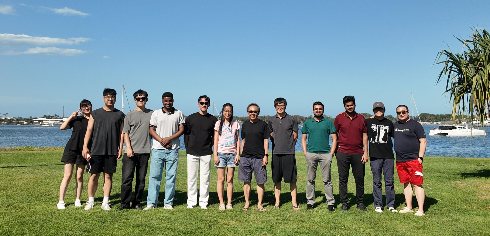

AI4Health Lab is an interdisciplinary research group based in the School of Information and Communication Technology at Griffith University. We advance AI-driven solutions for modern healthcare with a focus on robustness, interpretability, privacy preservation, and clinical relevance. Our expertise spans computer vision, deep learning, medical imaging, computational pathology, neuroscience, and health informatics. Through close collaboration with hospitals, research institutes, and industry partners, we translate cutting-edge research into real-world impact, driving innovation across precision medicine, disease diagnosis, personalized treatment, and trustworthy healthcare AI.
